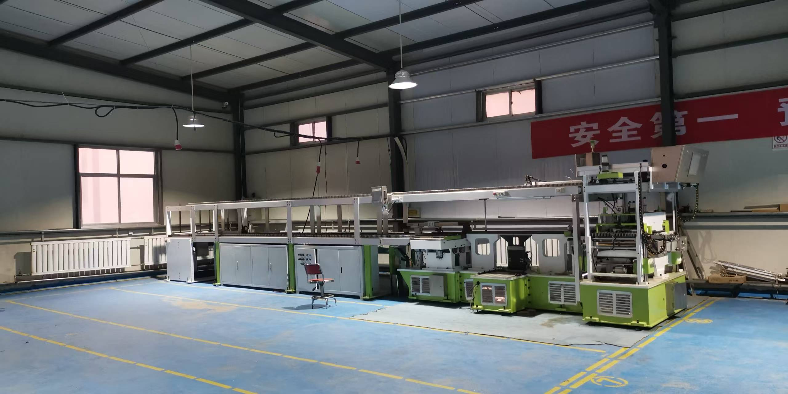
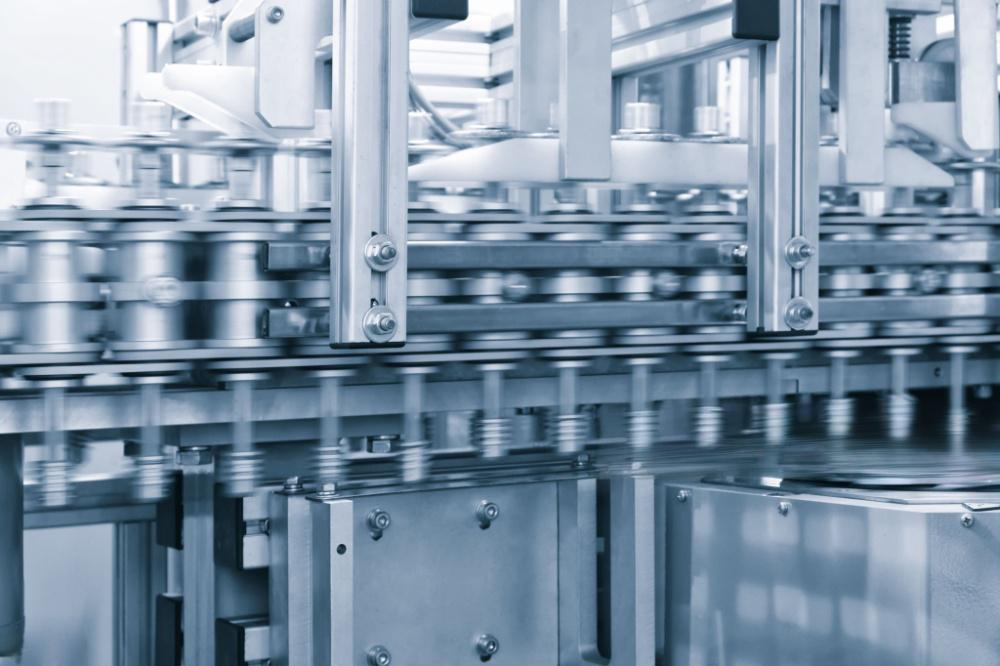
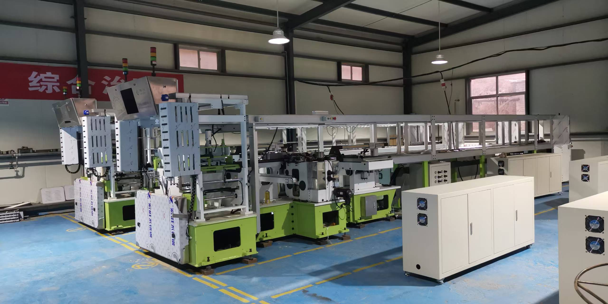
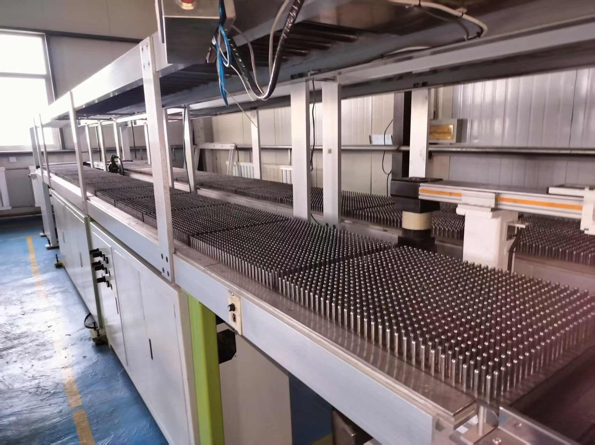
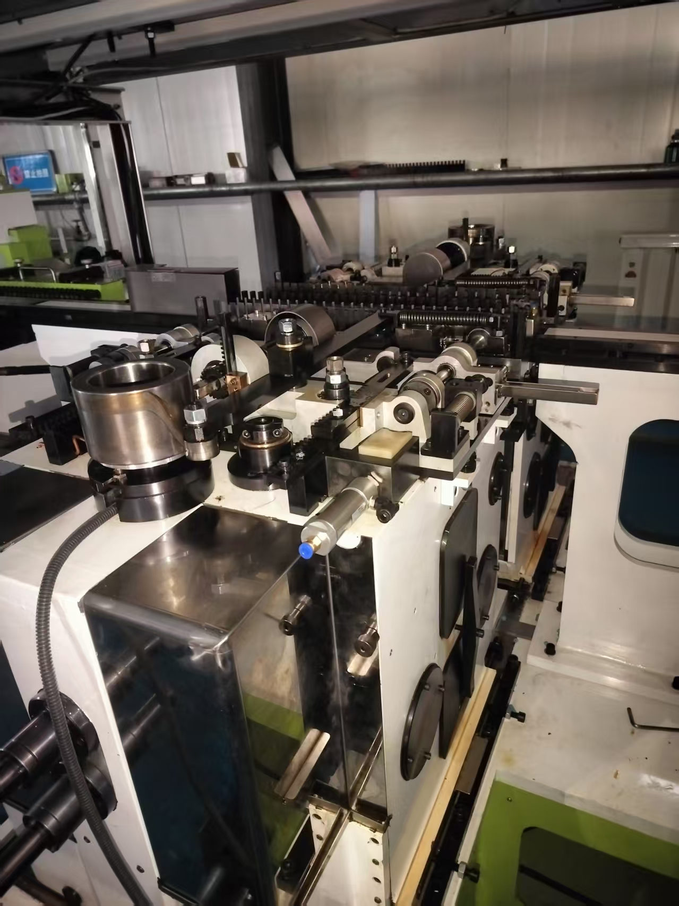
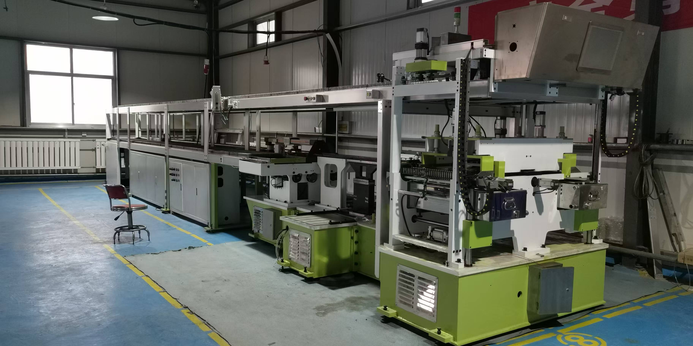

Линия производства капсул
Автоматическая линия PS-DNJ34
Производительность: 1 400 000 капсул/сутки
Подробнее →Оборудование для формования, сушки, полировки и сортировки капсул, а также CNC-обработка компонентов по требованиям проекта.

Проверенные модели и индивидуальное согласование окончательной конфигурации проекта.

Производительность: 1 400 000 капсул/сутки
Подробнее →
Производительность: 1 500 000 капсул/сутки
Подробнее →

Автоматизация и мониторинг состояния производственной линии
Подробнее →Gansu Qilin Intelligent Equipment специализируется на оборудовании для твердых пустых фармацевтических капсул, вспомогательных системах и точной мехобработке.
Каждый проект обсуждается с учетом производственных целей, обслуживания, условий площадки, поставки и технической поддержки.
Подробнее о компании
Опыт формования, сушки, полировки и сортировки капсул.
Изготовление ключевых деталей и проверка оборудования перед поставкой.
Монтажные рекомендации, обучение, удаленная помощь и запасные части.
Определяем производительность, спецификацию капсул, площадку и сроки.
Согласуем конфигурацию, интерфейсы, объем поставки и ответственность.
Изготавливаем, собираем и проверяем оборудование по согласованному плану.
Помогаем с установкой, обучением, сервисом и запасными частями.
Укажите спецификацию капсул, производственные цели, страну назначения или требования к обработке.